Libros de aprendizaje y psicología educativa
Libros de aprendizaje y psicología educativa en español: 91 libros completos para leer gratis aquí mismo y 10 fichas de títulos actuales.
Psicología del aprendizajeAprendizaje significativoMotivación académicaNeuroeducaciónPsicología del profesoradoPsicología del rendimiento académicoAprendizaje autorreguladoDificultades de aprendizajeComprensión lectoraEstrategias de enseñanzaAprendizaje asociativoMetacognición aplicada al estudioMemoria y aprendizajeRecuperación activaRepetición espaciada
Cuidarme, cuidarnos, cuidar la Tierra. Propuesta didáctica para 5º y 6º de Educación primaria y 1º y 2º de ESOAfonso Mederos M.C.; De Madrid Robleño, C.; García Bayón, Israel; Gil Viñas, Mercè; Gutiérrez Expósito, María Esther; López Fernández-Asenjo, Flor; Martínez Sánchez, Joaquín José; Montesinos Fernández
Cuidarme, cuidarnos, cuidar la Tierra. Propuesta didáctica para 5º y 6º de Educación primaria y 1º y 2º de ESOAfonso Mederos M.C.; De Madrid Robleño, C.; García Bayón, Israel; Gil Viñas, Mercè; Gutiérrez Expósito, María Esther; López Fernández-Asenjo, Flor; Martínez Sánchez, Joaquín José; Montesinos FernándezCurrículo para el aprendizaje socioemocional (CASE)García Bacete, Francisco Juan; Marande Perrin, Ghislaine
Currículo para el aprendizaje socioemocional (CASE)García Bacete, Francisco Juan; Marande Perrin, GhislaineIntervención psicoeducativa en las escuelas para mejorar la convivencia y la inclusión del alumnado rechazado. Fundamentación del modelo GREIGarcía Bacete, Francisco Juan; Marande Perrin, Ghislaine
Intervención psicoeducativa en las escuelas para mejorar la convivencia y la inclusión del alumnado rechazado. Fundamentación del modelo GREIGarcía Bacete, Francisco Juan; Marande Perrin, GhislainePEDAGOGÍA CON SENTIDOS. EPISTEMOLOGÍA, AFECTIVIDAD Y TRANSFORMACIÓN DEL APRENDIZAJEGavín-Chocano, Óscar; Checa Domene, Lara; Granado de la Cruz, Elena; Payá Gómez, Marcos Alfonso
PEDAGOGÍA CON SENTIDOS. EPISTEMOLOGÍA, AFECTIVIDAD Y TRANSFORMACIÓN DEL APRENDIZAJEGavín-Chocano, Óscar; Checa Domene, Lara; Granado de la Cruz, Elena; Payá Gómez, Marcos AlfonsoTecnologías aplicadas al alumnado con TEA: Guía Práctica para el aprendizaje, la comunicación y la autonomíaFernández Cerero, José; Montenegro Rueda, Marta; Piñero Virué, Rocío; Morales Pérez, Gloria Luisa
Tecnologías aplicadas al alumnado con TEA: Guía Práctica para el aprendizaje, la comunicación y la autonomíaFernández Cerero, José; Montenegro Rueda, Marta; Piñero Virué, Rocío; Morales Pérez, Gloria LuisaCartas para un cierto saber del alma. Ejercicios educativos para el cultivo de síRuiz Ortega, Lucero Alexandra
Cartas para un cierto saber del alma. Ejercicios educativos para el cultivo de síRuiz Ortega, Lucero AlexandraDecálogo para el profesorado. Claves para ayudar a tus estudiantes en la gestión de sus niveles de estrés académicoDíez López, Marta; García Moya, Irene; Paniagua Infantes, Carmen Elisa; Jiménez Iglesias, Antonia María; Villegas Martínez, Flora; Jiménez Álvarez, Ana
Decálogo para el profesorado. Claves para ayudar a tus estudiantes en la gestión de sus niveles de estrés académicoDíez López, Marta; García Moya, Irene; Paniagua Infantes, Carmen Elisa; Jiménez Iglesias, Antonia María; Villegas Martínez, Flora; Jiménez Álvarez, AnaDesarrollo y aprendizaje en la adolescencia: máster formación del profesorado
Desarrollo y aprendizaje en la adolescencia: máster formación del profesoradoDiversidad y respuesta psicopedagógica: grados de Educación Infantil y Primaria
Diversidad y respuesta psicopedagógica: grados de Educación Infantil y PrimariaEducación y diversidad: Aportes de la psicología para una docencia inclusivaAlbert, Evelin
Educación y diversidad: Aportes de la psicología para una docencia inclusivaAlbert, EvelinManual De Neurodivergencias Y Adaptaciones Razonables Una Guía Para La Educación Inclusiva ( 1).docxDiego Vega
Manual De Neurodivergencias Y Adaptaciones Razonables Una Guía Para La Educación Inclusiva ( 1).docxDiego VegaNecesidades psicológicas en la escuela: grados de Educación Infantil y Primaria
Necesidades psicológicas en la escuela: grados de Educación Infantil y PrimariaRelaciones sanas: Programa educativo para la prevención de la violencia en las relaciones de pareja jovenLara Vázquez, Laura
Relaciones sanas: Programa educativo para la prevención de la violencia en las relaciones de pareja jovenLara Vázquez, LauraRelatos personales como objetos de frontera en contextos educativosGalván Fernández, Cristina
Relatos personales como objetos de frontera en contextos educativosGalván Fernández, CristinaRetórica y educación. La expresión oral y su aprendizajeGallifa, Josep
Retórica y educación. La expresión oral y su aprendizajeGallifa, Josep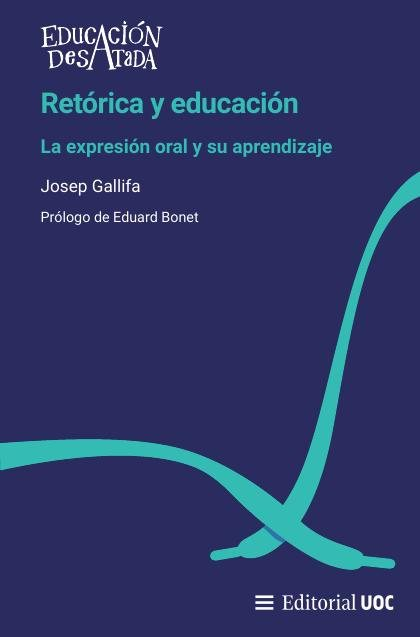
TDAH: funciones ejecutivas y desafíos de comportamiento en el aula y en casa
TDAH: funciones ejecutivas y desafíos de comportamiento en el aula y en casaUn centro que cuida : guía práctica de cuidado e inclusión en los centros educativosGarcía, Israel; García, Santiago; Gil, Mercè; Gutiérrez, Maria Esther; Guzman, Joan Pere; López, Flor; Madrid, Clara I. de; Martínez, Joaquín José; Montesinos, Marta; Sanjuán, Carmen; Sebastián, María
Un centro que cuida : guía práctica de cuidado e inclusión en los centros educativosGarcía, Israel; García, Santiago; Gil, Mercè; Gutiérrez, Maria Esther; Guzman, Joan Pere; López, Flor; Madrid, Clara I. de; Martínez, Joaquín José; Montesinos, Marta; Sanjuán, Carmen; Sebastián, María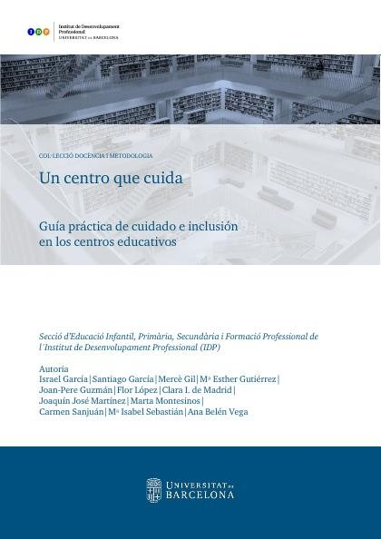
¿Qué papel juega la autorregulación en el aprendizaje y comportamiento del estudiante?Bausela Herreras, Esperanza
¿Qué papel juega la autorregulación en el aprendizaje y comportamiento del estudiante?Bausela Herreras, EsperanzaCuaderno de casos: Psicología de la Educación, grado en Psicología, Universidad Autónoma de MadridPoveda Bicknell, David Patrick
Cuaderno de casos: Psicología de la Educación, grado en Psicología, Universidad Autónoma de MadridPoveda Bicknell, David PatrickLa docencia universitaria en clave neuroeducativa : viejos problemas, nuevos retos: oportunidades para el cambioBueno i Torrens, David, 1965-; Forés i Miravalles, Anna
La docencia universitaria en clave neuroeducativa : viejos problemas, nuevos retos: oportunidades para el cambioBueno i Torrens, David, 1965-; Forés i Miravalles, AnnaLos profesionales de salud eficientes en el Siglo XXI: las competencias necesarias, para un aprendizaje continuado y activo en profesiones de saludGandini, Bernardo José
Los profesionales de salud eficientes en el Siglo XXI: las competencias necesarias, para un aprendizaje continuado y activo en profesiones de saludGandini, Bernardo JoséMaterial docente_Contenidos de la asignatura Psicofarmacología. Seminario 1 [Recurso Educativo]Buch Vicente, Bárbara
Material docente_Contenidos de la asignatura Psicofarmacología. Seminario 1 [Recurso Educativo]Buch Vicente, BárbaraRecursos de intervención en el aprendizaje de la escrituraRueda Sánchez, Mercedes Isabel; García Gómez, Lydia
Recursos de intervención en el aprendizaje de la escrituraRueda Sánchez, Mercedes Isabel; García Gómez, LydiaRecursos de intervención en el aprendizaje de la lecturaRueda Sánchez, Mercedes Isabel; García Gómez, Lydia
Recursos de intervención en el aprendizaje de la lecturaRueda Sánchez, Mercedes Isabel; García Gómez, LydiaEducación y discapacidades. Educación especialMonzani, María Inés
Educación y discapacidades. Educación especialMonzani, María InésItinerarios individualizados para un aprendizaje autorreguladoBartolomé Pina, Antonio; Rivera Vargas, Pablo; Lindín, Carles
Itinerarios individualizados para un aprendizaje autorreguladoBartolomé Pina, Antonio; Rivera Vargas, Pablo; Lindín, CarlesNeuropsicología del aprendizaje. Análisis sistemático de las dificultades del aprendizajeJames, Mabel Virginia Edith
Neuropsicología del aprendizaje. Análisis sistemático de las dificultades del aprendizajeJames, Mabel Virginia EdithPsicología genética, construcción de conocimientos y aprendizajes escolares / Psicología genéticaTerigi, Flavia
Psicología genética, construcción de conocimientos y aprendizajes escolares / Psicología genéticaTerigi, FlaviaTeoría socio-histórica, aprendizaje y educaciónDubrovsky, Silvia
Teoría socio-histórica, aprendizaje y educaciónDubrovsky, SilviaCuaderno de orientaciones para familias y docentesLedesma Marín, Nieves; Pellejero Goñi, Lucía; Scotton, Paolo; Alemany González, Amparo; Monzón González, Javier
Cuaderno de orientaciones para familias y docentesLedesma Marín, Nieves; Pellejero Goñi, Lucía; Scotton, Paolo; Alemany González, Amparo; Monzón González, JavierLA NEURODIDÁCTICA Y LA METODOLOGÍA DOCENTE: UN BINOMIO PARA LA INCLUSIÓNHernández Fernández, Antonio
LA NEURODIDÁCTICA Y LA METODOLOGÍA DOCENTE: UN BINOMIO PARA LA INCLUSIÓNHernández Fernández, AntonioLa educación inclusiva desde los gestos menores. Escenas escolaresRESTREPO GARCIA, PAULA ANDREA
La educación inclusiva desde los gestos menores. Escenas escolaresRESTREPO GARCIA, PAULA ANDREA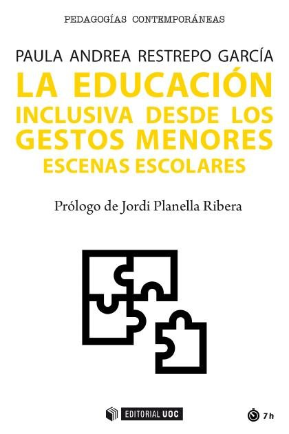
Narrativas de trayectorias educativas identitariasAutors varis
Narrativas de trayectorias educativas identitariasAutors varis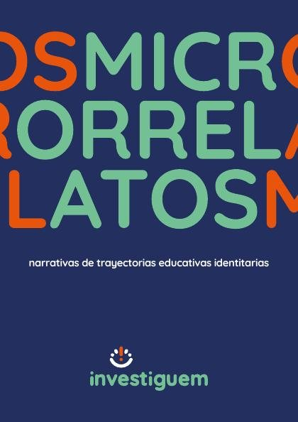
El engagement laboral del docente y su incidencia en el estudiante: un estudio de casoRaza Carrillo, Diego Fabián
El engagement laboral del docente y su incidencia en el estudiante: un estudio de casoRaza Carrillo, Diego Fabián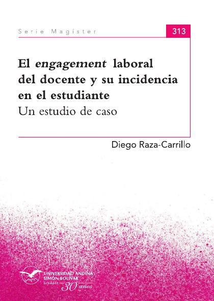
Estrategias de acompañamiento tutorial para el desarrollo de las emociones en el contexto de las prácticas de formación del profesoradoVaz Fernandes Catalino Procópio, Leandra; Sevilla Izquierdo, Carmen María
Estrategias de acompañamiento tutorial para el desarrollo de las emociones en el contexto de las prácticas de formación del profesoradoVaz Fernandes Catalino Procópio, Leandra; Sevilla Izquierdo, Carmen MaríaPsicología educacional (plan año 1985-2016)Baquero, Ricardo
Psicología educacional (plan año 1985-2016)Baquero, RicardoCelebrando la diversidad: Un recurso que enriquece la educación superior. Orientaciones para el profesorado universitarioSandoval Mena, Marta; Simón Rueda, Cecilia; Márquez Vázquez, María Carmen; Sánchez Fuentes, Sergio
Celebrando la diversidad: Un recurso que enriquece la educación superior. Orientaciones para el profesorado universitarioSandoval Mena, Marta; Simón Rueda, Cecilia; Márquez Vázquez, María Carmen; Sánchez Fuentes, Sergio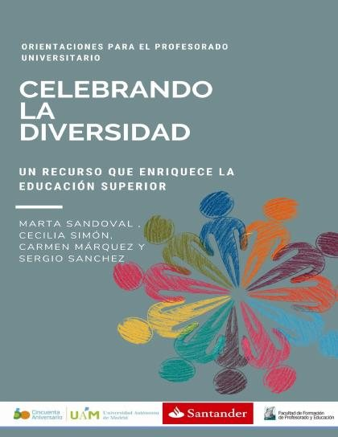
Educación y discapacidadesMonzani, María Inés
Educación y discapacidadesMonzani, María InésEl ágora de la neuroeducación: La neuroeducación explicada y aplicadaLluch, Laia; de la Vega, Iolanda Nieves
El ágora de la neuroeducación: La neuroeducación explicada y aplicadaLluch, Laia; de la Vega, Iolanda NievesLos videojuegos: ¿un problema de distracción o una oportunidad para aprender?Occelli, Maricel; Malin Vilar, Tania
Los videojuegos: ¿un problema de distracción o una oportunidad para aprender?Occelli, Maricel; Malin Vilar, TaniaMetodologías narrativas en educaciónRodríguez Illera, José Luis; Annacontini, Giuseppe
Metodologías narrativas en educaciónRodríguez Illera, José Luis; Annacontini, Giuseppe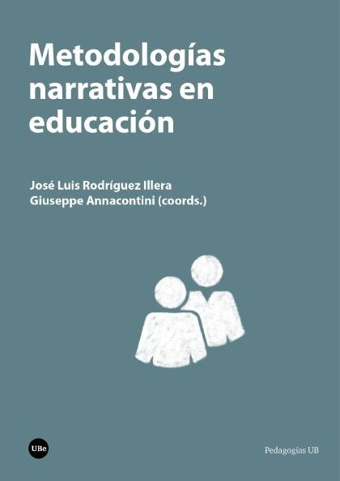
Resiliencia, educación emocional y duelo. Formación para futuros docentesMATEU PÉREZ, ROSA; Escobedo Peiro, Paula; Flores Buils, Raquel
Resiliencia, educación emocional y duelo. Formación para futuros docentesMATEU PÉREZ, ROSA; Escobedo Peiro, Paula; Flores Buils, RaquelAprender a comunicar: cómo practicar la comprensión y la expresión en lengua españolaPalma Peña Jiménez
Aprender a comunicar: cómo practicar la comprensión y la expresión en lengua españolaPalma Peña JiménezDificultades de aprendizaje en la Educación InfantilPresentación, M. Jesús; Siegenthaler, Rebeca; Mercader, Jessica
Dificultades de aprendizaje en la Educación InfantilPresentación, M. Jesús; Siegenthaler, Rebeca; Mercader, JessicaEstilística educativa : Experiencias investigativas sobre estilos de aprendizaje y estilos de enseñanzaRendón Uribe, María Alexandra; Cano Vásquez, Lina María; Holguín Higuita, Amparo; Varela Hincapié, Marta Cecilia; Galván Cabrera, Maggioris; Barboza Mogollón, Yasmira Emperatriz; Zapata Gómez, Víctor
Estilística educativa : Experiencias investigativas sobre estilos de aprendizaje y estilos de enseñanzaRendón Uribe, María Alexandra; Cano Vásquez, Lina María; Holguín Higuita, Amparo; Varela Hincapié, Marta Cecilia; Galván Cabrera, Maggioris; Barboza Mogollón, Yasmira Emperatriz; Zapata Gómez, Víctor 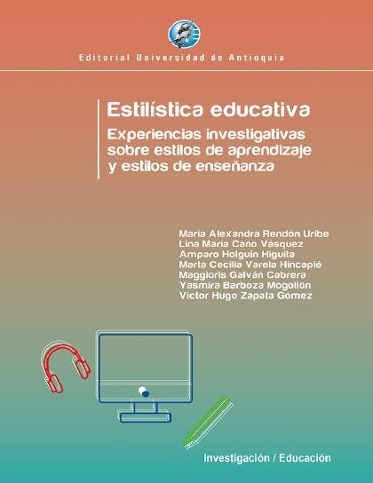
Miradas hacia la educación inclusiva: II Jornada de Educación y PsicopedagogíaFilidoro, Norma
Miradas hacia la educación inclusiva: II Jornada de Educación y PsicopedagogíaFilidoro, Norma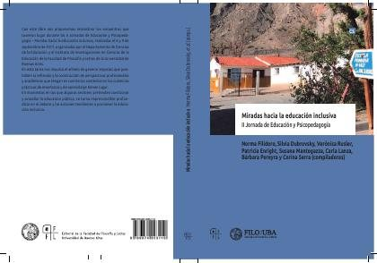
Diágnóstico y orientaciones para la intervención educativa en las dificultades del cálculo: marco teórico. Unidad 5 [Recurso Educativo]Sánchez García, Ana Belén
Diágnóstico y orientaciones para la intervención educativa en las dificultades del cálculo: marco teórico. Unidad 5 [Recurso Educativo]Sánchez García, Ana BelénLas bases biológicas del aprendizajeGlejzer, Claudio
Las bases biológicas del aprendizajeGlejzer, ClaudioPedagogías sensibles: Sabores y saberes del cuerpo y la educaciónPlanella Ribera, Jordi
Pedagogías sensibles: Sabores y saberes del cuerpo y la educaciónPlanella Ribera, Jordi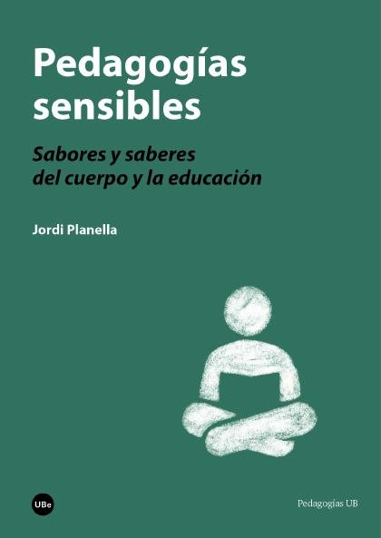
Psicología EducacionalBaquero, Ricardo
Psicología EducacionalBaquero, RicardoAnálisis Sistemático de las Dificultades de AprendizajeFeld, Víctor
Análisis Sistemático de las Dificultades de AprendizajeFeld, VíctorBiología. Comportamiento, desarrollo y aprendizajeGlejzer, Claudio E.
Biología. Comportamiento, desarrollo y aprendizajeGlejzer, Claudio E.Infancias contemporáneas. Retos educativosMedel García, Encarna
Infancias contemporáneas. Retos educativosMedel García, EncarnaAnálisis institucional de la escuela (y de los grupos de aprendizaje)Silva, Ana María
Análisis institucional de la escuela (y de los grupos de aprendizaje)Silva, Ana MaríaCognición, neurociencia y aprendizaje : el adolescente en la educación superiorPease D., María Angélica; Figallo R., Flavio; Ysla Almonacid, Liz C.
Cognición, neurociencia y aprendizaje : el adolescente en la educación superiorPease D., María Angélica; Figallo R., Flavio; Ysla Almonacid, Liz C.El aprendizaje cooperativoMayordomo, Rosa M.; Onrubia, Javier; Badia, Antoni; Duran Gisbert, David; Engel, Anna; Jiménez Perales, Verónica; Lago, José Ramón; Martínez, Concepción; Naranjo Llanos, Mila; Pujolàs Maset, Pere; Rie
El aprendizaje cooperativoMayordomo, Rosa M.; Onrubia, Javier; Badia, Antoni; Duran Gisbert, David; Engel, Anna; Jiménez Perales, Verónica; Lago, José Ramón; Martínez, Concepción; Naranjo Llanos, Mila; Pujolàs Maset, Pere; RieEl potencial que emerge : cognición, neurociencia y aprendizaje en adolescentes universitariosPease D., María Angélica
El potencial que emerge : cognición, neurociencia y aprendizaje en adolescentes universitariosPease D., María AngélicaEscuelas y aulas creativas. Reflexiones y experienciasPujol, M. Antònia (Maria Antònia); Torre, Saturnino de la; Lorenzo Ramírez, Núria
Escuelas y aulas creativas. Reflexiones y experienciasPujol, M. Antònia (Maria Antònia); Torre, Saturnino de la; Lorenzo Ramírez, Núria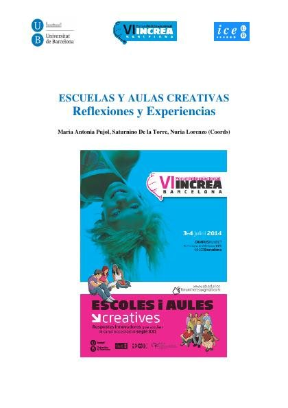
Aprendizaje motor, precisión y toma de decisiones en el deporteRamón Suárez, Gustavo; Hoyos Rodríguez, Gloria Albany; Echeverry Ramos, José Albeiro; Jiménez Trujillo, Juan Osvaldo; Ramírez Silva, William
Aprendizaje motor, precisión y toma de decisiones en el deporteRamón Suárez, Gustavo; Hoyos Rodríguez, Gloria Albany; Echeverry Ramos, José Albeiro; Jiménez Trujillo, Juan Osvaldo; Ramírez Silva, WilliamDificultades de aprendizaje de los contenidos curricularesAntoni Badia, Maribel Cano Ortiz, Ceneida Fernández-Verdú y otros
Dificultades de aprendizaje de los contenidos curricularesAntoni Badia, Maribel Cano Ortiz, Ceneida Fernández-Verdú y otrosAprendizaje invisible: hacia una nueva ecología de la educaciónCobo Romaní, Cristobal; Moravec, John
Aprendizaje invisible: hacia una nueva ecología de la educaciónCobo Romaní, Cristobal; Moravec, JohnAprendizaje, cultura y desarrollo : una aproximación interdisciplinariaFrisancho, Susana
Aprendizaje, cultura y desarrollo : una aproximación interdisciplinariaFrisancho, SusanaEspacio Europeo de Educación Superior: estándares e indicadores de buenas prácticas para la atención a estudiantes universitarios con discapacidadDíez Villoria, Emiliano; Alonso, Alba; Verdugo Alonso, Miguel Ángel; Campo Blanco, Isabel; Sancho, Isabel; Sánchez, Sergio; Calvo Álvarez, María Isabel; Moral Cabrero, Eva
Espacio Europeo de Educación Superior: estándares e indicadores de buenas prácticas para la atención a estudiantes universitarios con discapacidadDíez Villoria, Emiliano; Alonso, Alba; Verdugo Alonso, Miguel Ángel; Campo Blanco, Isabel; Sancho, Isabel; Sánchez, Sergio; Calvo Álvarez, María Isabel; Moral Cabrero, EvaLa educación revisitada: ensayos de hermenéutica pedagógicaMoreu, Àngel C.; Prats Gil, Enric
La educación revisitada: ensayos de hermenéutica pedagógicaMoreu, Àngel C.; Prats Gil, Enric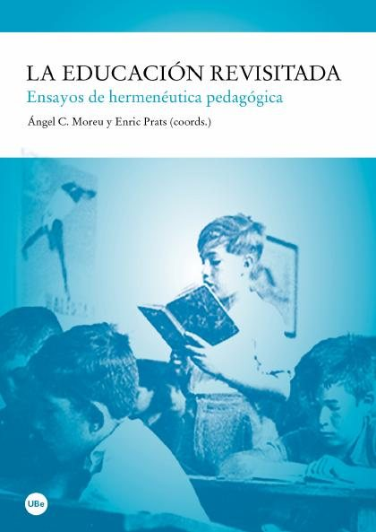
Cooperación como condición social de aprendizajeSuárez-Guerrero, Cristóbal
Cooperación como condición social de aprendizajeSuárez-Guerrero, CristóbalLa acción tutorial y orientadora en el Espacio Europeo de Educación Superior: la tutoría curricular en la Facultad de PsicologíaGómez de Terreros Guardiola, Montserrat; Arias Holgado, Mª Francisca; Lanzarote Fernández, María Dolores
La acción tutorial y orientadora en el Espacio Europeo de Educación Superior: la tutoría curricular en la Facultad de PsicologíaGómez de Terreros Guardiola, Montserrat; Arias Holgado, Mª Francisca; Lanzarote Fernández, María DoloresMetacognición y lecturaPinzás G., Juana
Metacognición y lecturaPinzás G., JuanaLa convivencia escolar: qué es y cómo abordarla. Programa Educativo de Prevención de Maltrato entre compañeros y compañerasOrtega Ruiz, Rosario
La convivencia escolar: qué es y cómo abordarla. Programa Educativo de Prevención de Maltrato entre compañeros y compañerasOrtega Ruiz, RosarioLa Atención a la diversidad en la educación secundariaDolz, Dolores; Martín, Elena (Martín Ortega); Mauri, Teresa; Giné Giné, Climent, 1948-; Herráez, Juan; Salguero, José Mª.; Soler, Miguel; Tirado, Vicent
La Atención a la diversidad en la educación secundariaDolz, Dolores; Martín, Elena (Martín Ortega); Mauri, Teresa; Giné Giné, Climent, 1948-; Herráez, Juan; Salguero, José Mª.; Soler, Miguel; Tirado, VicentSocialización y aprendizaje socialLeón Rubio, José María; Cantero Sánchez, Francisco Javier; Medina Anzano, Silvia
Socialización y aprendizaje socialLeón Rubio, José María; Cantero Sánchez, Francisco Javier; Medina Anzano, SilviaCompendio de psicología para educación secundariaIberico, Mariano
Compendio de psicología para educación secundariaIberico, MarianoEnseñanza y aprendizaje: conferencias dadas en la Casa del Pueblo de BarcelonaValentí Vivó, Ignacio, 1841-1924
Enseñanza y aprendizaje: conferencias dadas en la Casa del Pueblo de BarcelonaValentí Vivó, Ignacio, 1841-1924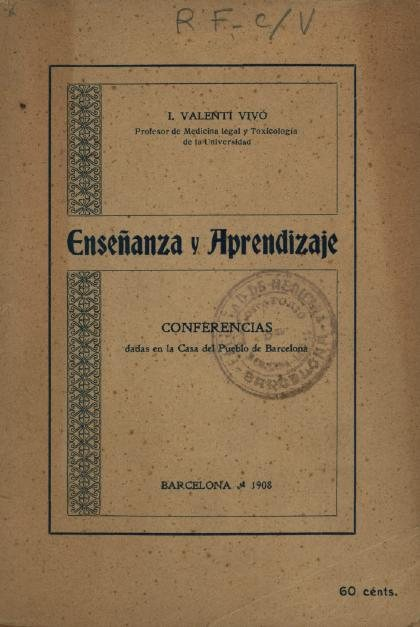
Caso práctico. Alumno en riesgo de presentar dificultades en el aprendizaje de la lectura y la escritura [Recurso Educativo]García Serrano, María; Sánchez Fernández, María del Rosario; Vicente Martín, Santiago
Caso práctico. Alumno en riesgo de presentar dificultades en el aprendizaje de la lectura y la escritura [Recurso Educativo]García Serrano, María; Sánchez Fernández, María del Rosario; Vicente Martín, SantiagoFormación competencial docente: estrategias de la neurodidáctica desde el enfoque de la Psicología PositivaVentura Campos, Mercedes
Formación competencial docente: estrategias de la neurodidáctica desde el enfoque de la Psicología PositivaVentura Campos, MercedesAprendizaje basado en juegosFuente Silva, Andrea de la; Garrido Martos, Rocío
Aprendizaje basado en juegosFuente Silva, Andrea de la; Garrido Martos, RocíoAprendizaje cooperativoRappoport Redondo, Soledad Inés
Aprendizaje cooperativoRappoport Redondo, Soledad InésIdentificación e intervención de las Altas Capacidades en el aula: Una propuesta psicoeducativa dirigida a la persona docente en el marco educativo costarricenseParedes Quesada, Ivana
Identificación e intervención de las Altas Capacidades en el aula: Una propuesta psicoeducativa dirigida a la persona docente en el marco educativo costarricenseParedes Quesada, IvanaLos procesos de aprendizaje y motivaciónCarmelo P. Cubillas
Los procesos de aprendizaje y motivaciónCarmelo P. CubillasPsicología del aprendizaje y la motivación, septiembre 2021Cubillas, Carmelo P.
Psicología del aprendizaje y la motivación, septiembre 2021Cubillas, Carmelo P.Terapia psicoanalítica, febrero 2021González Rodríguez, Ana Cecilia; Freiria Blanch, Andrea
Terapia psicoanalítica, febrero 2021González Rodríguez, Ana Cecilia; Freiria Blanch, AndreaTrastornos de aprendizaje de la lectura, febrero 2020Lara-Diaz, Maria Fernanda; Rodríguez-Ferreiro, Javier; Andreu, Llorenç; López Sala, Anna; Palacio Navarro, Andrea
Trastornos de aprendizaje de la lectura, febrero 2020Lara-Diaz, Maria Fernanda; Rodríguez-Ferreiro, Javier; Andreu, Llorenç; López Sala, Anna; Palacio Navarro, AndreaLa incomodidad en la profesión docente: un estudio con profesores de Zacatecas (México) y Cuenca (Ecuador)Hurtado Morejón, Rosa
La incomodidad en la profesión docente: un estudio con profesores de Zacatecas (México) y Cuenca (Ecuador)Hurtado Morejón, RosaPredicción, prevención y tratamiento conducta delictiva, septiembre 2019Hilterman, Ed; Nguyen Vo, Thi Hong Thuy
Predicción, prevención y tratamiento conducta delictiva, septiembre 2019Hilterman, Ed; Nguyen Vo, Thi Hong ThuyCuestión de sexo. Qué dice la biología acerca de la determinación sexual en humanos. Lección Inaugural del Aula de la Experiencia de la Universidad de Sevilla. Curso Académico 2017-2018López Calderón, Isabel
Cuestión de sexo. Qué dice la biología acerca de la determinación sexual en humanos. Lección Inaugural del Aula de la Experiencia de la Universidad de Sevilla. Curso Académico 2017-2018López Calderón, IsabelLos mapas mentalesP. Baldoví Borràs
Los mapas mentalesP. Baldoví BorràsMapas mentales, septiembre 2016Baldovi Borras, Pbaldovi
Mapas mentales, septiembre 2016Baldovi Borras, PbaldoviPredicción, prevención y tratamiento de la conducta delictiva, septiembre 2013Garrido Genovés, Vicente; González García, Almudena
Predicción, prevención y tratamiento de la conducta delictiva, septiembre 2013Garrido Genovés, Vicente; González García, AlmudenaCaracterísticas de las dificultades de aprendizaje en niños de 8 a 11 años de Medellín - ColombiaUribe Pedroza, Luz Helena; Vélez Jaramillo, María Elena; Echeverry Jaramilo, Liliana María; Pineda Salazar, David Antonio; Gómez Betancur, Luz Ángela
Características de las dificultades de aprendizaje en niños de 8 a 11 años de Medellín - ColombiaUribe Pedroza, Luz Helena; Vélez Jaramillo, María Elena; Echeverry Jaramilo, Liliana María; Pineda Salazar, David Antonio; Gómez Betancur, Luz ÁngelaMetodologia del Aprendizaje. Material teórico prácticoHilas, Elena; Andrawos, Alejandra; Castillo, Beatriz; Castillo, María Cristina; Rezzónico, María Silvina; Tessio Conca, Adriana
Metodologia del Aprendizaje. Material teórico prácticoHilas, Elena; Andrawos, Alejandra; Castillo, Beatriz; Castillo, María Cristina; Rezzónico, María Silvina; Tessio Conca, AdrianaLa educación de la competencia socioemocional en la institución escolar a través del pensamiento crítico reflexivo y el aprendizaje cooperativoRendón Uribe, María Alexandra; Cuadros Jiménez, Olga Elena
La educación de la competencia socioemocional en la institución escolar a través del pensamiento crítico reflexivo y el aprendizaje cooperativoRendón Uribe, María Alexandra; Cuadros Jiménez, Olga ElenaAspectos clave de la educación inclusivaValenciano Canet, Grettel
Aspectos clave de la educación inclusivaValenciano Canet, GrettelNeuroeducación. Solo se puede aprender aquello que se amaFrancisco Mora
Neuroeducación. Solo se puede aprender aquello que se amaFrancisco MoraEducar en el asombroCatherine L'Ecuyer
Educar en el asombroCatherine L'Ecuyer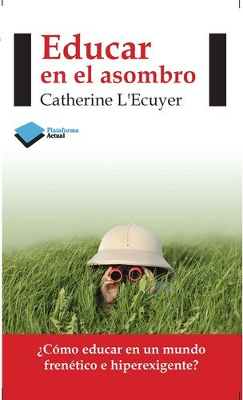
Inteligencias múltiplesHoward Gardner
Inteligencias múltiplesHoward GardnerLos desafíos de la memoriaJoshua Foer
Los desafíos de la memoriaJoshua FoerDisciplina positivaJane Nelsen
Disciplina positivaJane Nelsen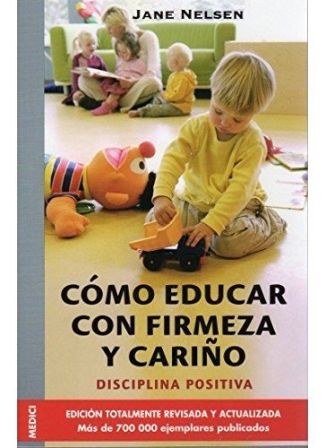
El valor de educarFernando Savater
El valor de educarFernando SavaterAprender a aprenderBarbara Oakley y Terrence Sejnowski
Aprender a aprenderBarbara Oakley y Terrence Sejnowski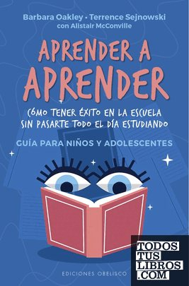
Cómo aprendemosHéctor Ruiz Martín
Cómo aprendemosHéctor Ruiz Martín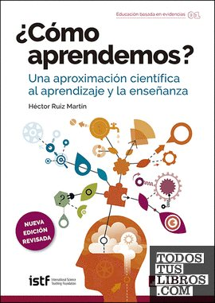
Mindset. La actitud del éxitoCarol S. Dweck
Mindset. La actitud del éxitoCarol S. Dweck¿Cómo aprendemos?Stanislas Dehaene
¿Cómo aprendemos?Stanislas Dehaene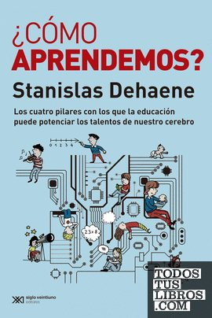
Temas relacionados
¿Estás eligiendo carrera?
Haz gratis el test de orientación vocacional de AURZANE: intereses, aptitudes, autoconcepto y hábitos de estudio, con informe completo.